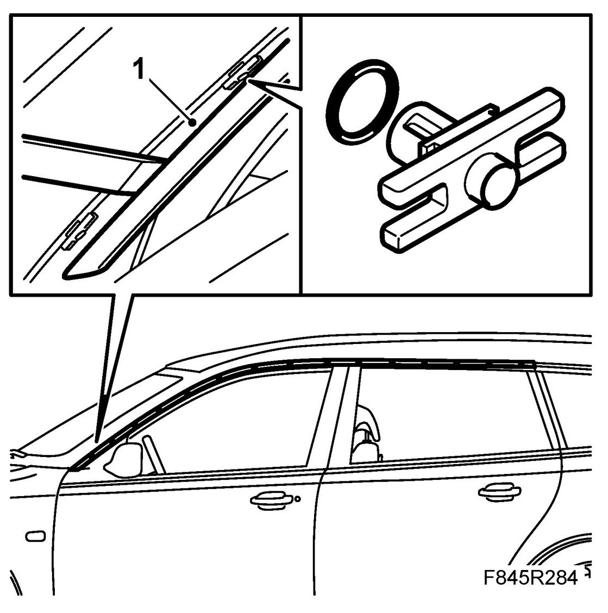
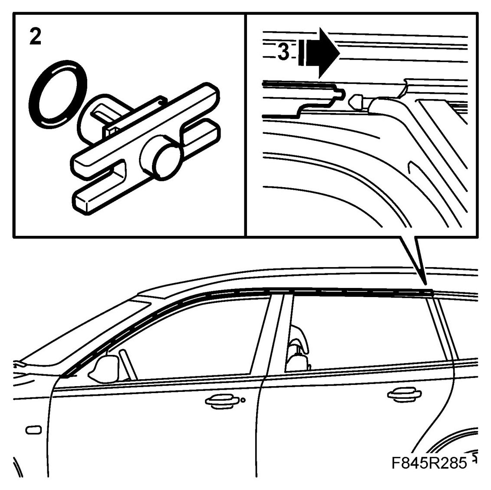
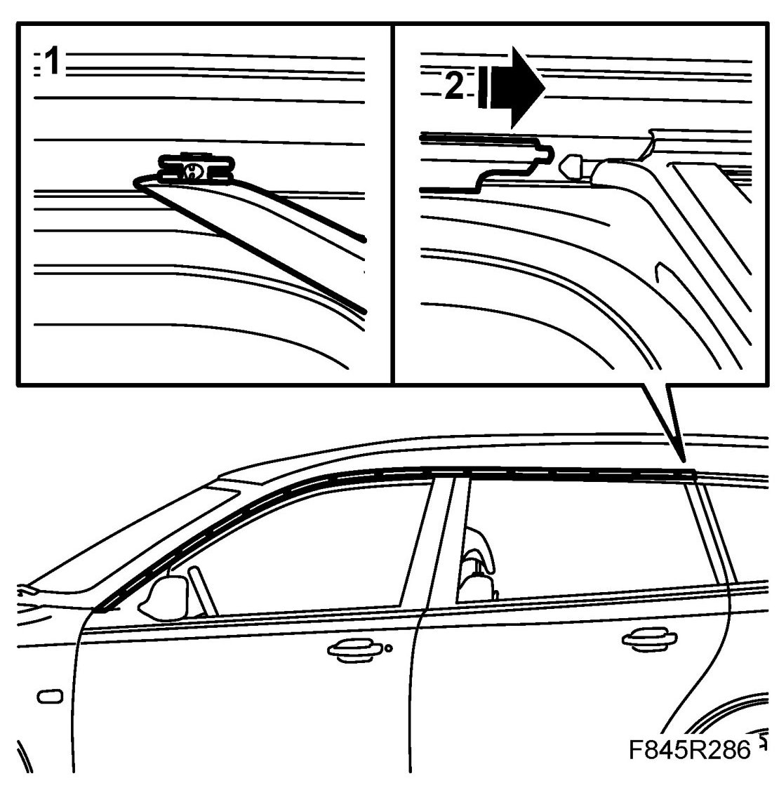

Front Moulding, Door Opening, 5D
Front Moulding, Door Opening, 5D
To remove
1. Loosen the strip using 82 93 474 Removal tool. Start at the front edge and lift the rear edge of the strip from the clip.

Refitting the old strip
1. Leave the clip in place on the body. Change the clip if necessary.
2. Turn the clip to the correct position.

3. Fit the moulding by guiding in its inner seal and guide clips. Press in the moulding so that the clips engage.
Fitting a new strip
1. Remove the clips in the body by cutting them with a knife.

IMPORTANT: Take care not to damage paintwork during removal.
2. Fit the moulding by guiding in its inner seal and guide clips. Press in the moulding so that the clips engage.